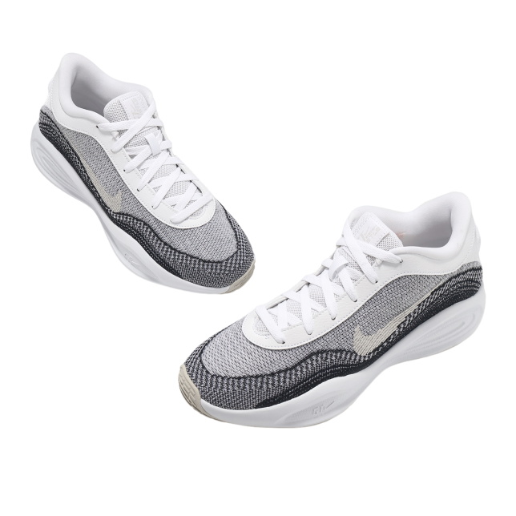
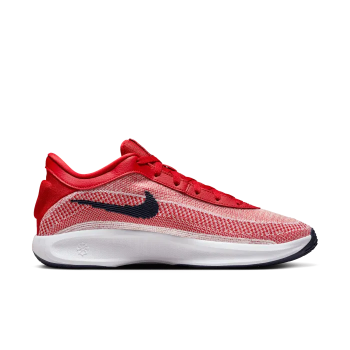
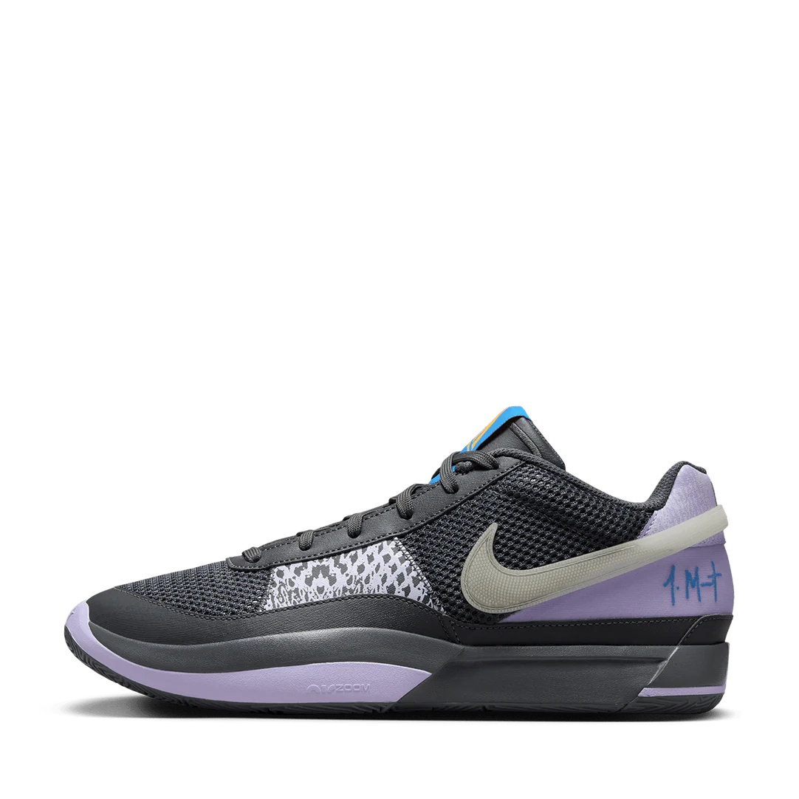
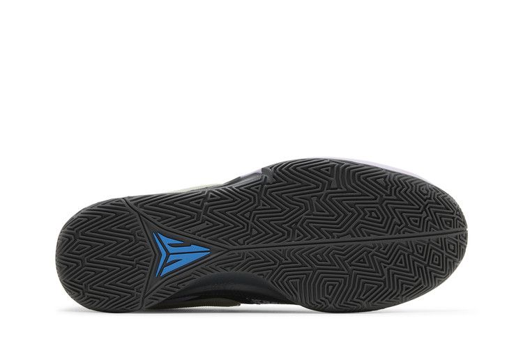
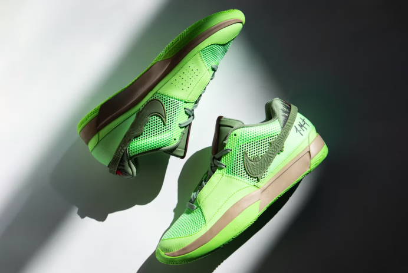
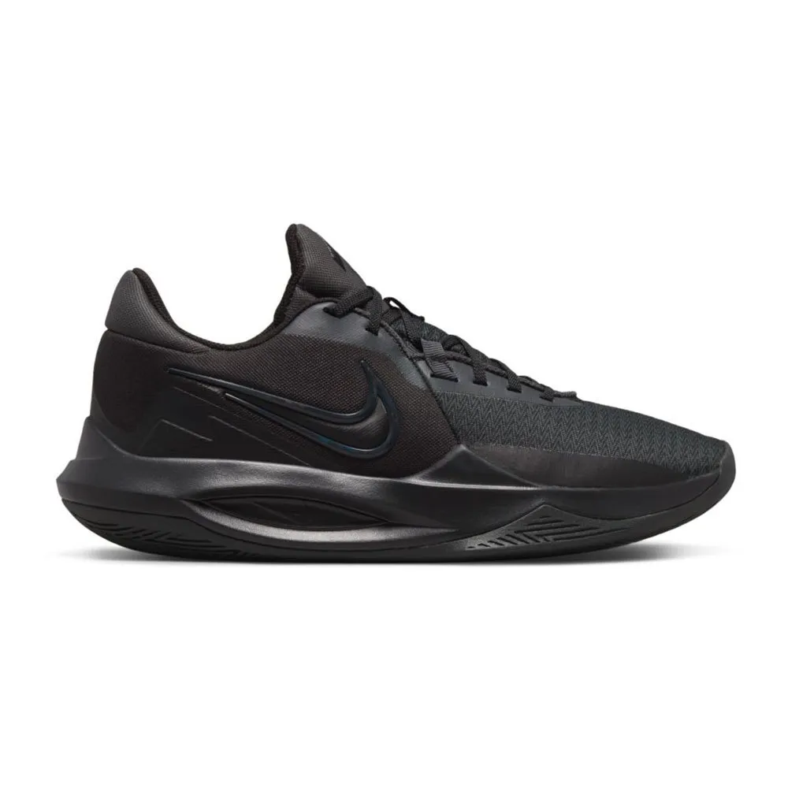
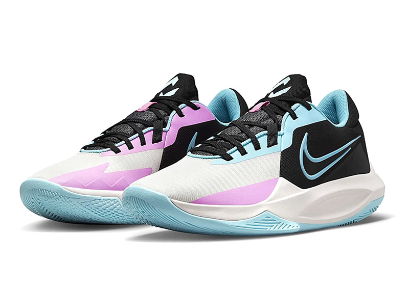
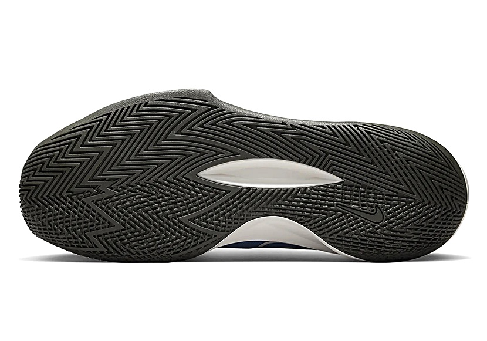

la G.T.Hustle Academy est une paire de chaussure que nous proposons sur notre site.
Ces qualités sont:
- La chaussure de sport Gthustle Academy offre une excellente adhérence, assurant stabilité et sécurité lors des
entraînements intenses.
- La plaque de carbone au centre de la chaussure Gthustle Academy optimise la propulsion et la réactivité,
offrant un excellent retour d'énergie pour des performances accrues lors des entraînements et compétitions.
- Le maintien de la cheville de la chaussure Gthustle Academy est conçu pour offrir une stabilité optimale
pendant l'effort. Grâce à son col renforcé et son système de laçage ajustable, la chaussure enveloppe fermement la
cheville, limitant ainsi les risques de torsion tout en garantissant une liberté de mouvement.



La paire de chaussure Ja Morant 1 est une très bonne option pour les jouers qui aiments sentir
des sentations très proche du sol avec une bonne accroche au sol.
Ces qualités sont:
- La plaque en carbone, stratégiquement positionnée sur toute la longueur de la semelle, offre une réactivité
exceptionnelle et un retour d'énergie optimal, garantissant ainsi une performance accrue et une dynamique de
propulsion incomparable.
- La semelle dotée de motifs multidirectionnels de la paire assure une accroche exceptionnelle au sol, offrant
ainsi une stabilité optimale et une adhérence maximale, quel que soit le type de terrain.
- La chaussure offre un maintien optimal du pied, garantissant ainsi une sécurité renforcée lors des mouvements
brusques grâce à son renfort anatomique au talon, qui assure une stabilité accrue et un soutien parfait pendant
les activités les plus intenses.



La paire de chaussure Precision 6 de nike est une bonne option pour ceux qui chercher
une bonne paire pour un prix abordable.
Ces qualités sont:
- Bien que cette chaussure ne bénéficie pas d’un retour d'énergie exceptionnel en raison de l'absence d'une plaque
de carbone, elle offre malgré tout un amorti performant et satisfaisant, compte tenu de son prix.
- La semelle dotée de motifs multidirectionnels de la paire assure une très bonne accroche au sol, offrant ainsi
une bonne stabilité et une adhérence correcte, quel que soit le type de terrain. C'est le gros point fort de la
paire pour son prix.
- La chaussure offre un maintien du pied plutôt médiocre, ce qui conviendra aux joueurs légers, mais ne garantit
pas une sécurité optimale pour les joueurs plus lourds. C'est, à mon avis, son principal défaut.



retour à l'acceuil
Vous pouvez retouver les chaussures Nike ici.